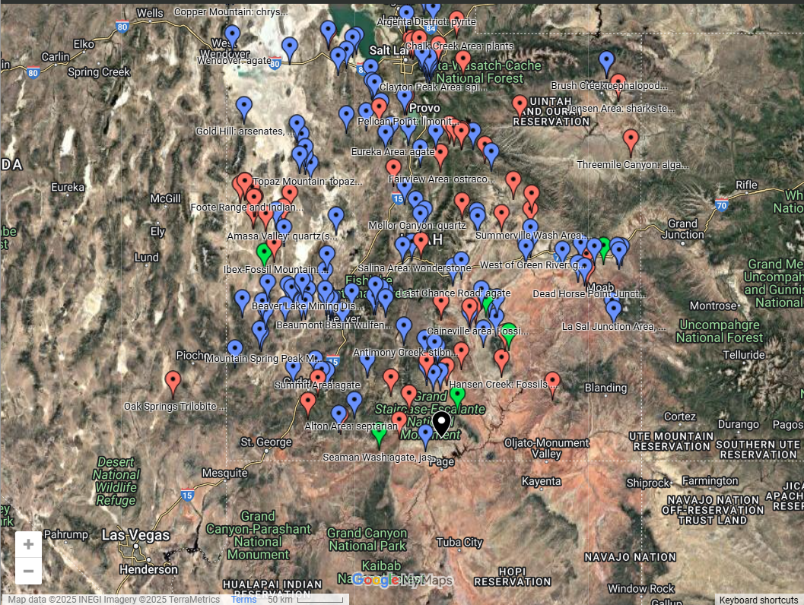

Beryl: A Complete Collector's Guide to Finding, Valuing, and Caring for Beryl Gemstones
If you're fascinated by shiny stones and love exploring nature's treasures, then you've probably heard of Beryl! It's a beautiful gemstone that comes in many dazzling colors. Beryl is loved by collectors, jewelers, and gem enthusiasts around the world. In this guide, we'll explore the magic of beryl, how to find it, and how to take care of these sparkling stones. Let's dive in!
What is Beryl?
Beryl is a gemstone that forms deep within the Earth. It takes millions of years for this beautiful mineral to develop. It's made of a mineral called beryllium aluminum silicate. That sounds fancy, but all you need to know is that beryl is a real treasure from Mother Nature!
Types of Beryl
Beryl is like a chameleon because it comes in many colors, each representing a different type of beryl. Here are its most popular varieties:
- Emerald: Deep green and super rare, emeralds are loved for their rich color.
- Aquamarine: Light blue to greenish-blue, aquamarine looks like the sea on a sunny day.
- Morganite: Pink to peach, this beryl variety is romantic and warm.
- Heliodor: Golden-yellow, heliodor looks like sunshine trapped in a gem.
- Goshenite: Clear and sparkly, this type is the purest form of beryl.
- Red Beryl: Known as "bixbite," this red gem is one of the rarest on Earth!
The Colors of Beryl: What Makes It So Special?
The colors of beryl come from tiny amounts of metals inside the stone. For example:
- Chromium and vanadium make emeralds green.
- Iron gives aquamarine its blue hue.
- Manganese adds pink to morganite.
Each beryl variety has its own unique beauty, which is why collectors treasure them so much.
Fun Facts About Beryl
- The name "beryl" comes from the ancient Greek word “beryllos,” which means a blue-green stone.
- Emeralds were Cleopatra's favorite gems.
- In the past, beryl was used to make early eyeglasses because it's clear and strong.
- Beryl is a source of beryllium, a metal used in aerospace technology!
How to Find Beryl: A Rockhound's Guide
If you love adventures, why not try rockhounding for Beryl? Here's how and where you can locate these precious gemstones.
Tips for Finding Beryl
- Look for pegmatite rocks. These are the granite-like rocks where beryl is often found.
- Check near riverbeds and mountains, as water and erosion can reveal hidden gems.
- Use tools like a rock hammer, sifter, and safety goggles.
Where to Find Beryl
Some of the best places to find beryl are in areas where the right geological conditions exist. Beryl often forms in pegmatite rocks, which are rich in minerals and give rise to large crystals. These locations are known for their beryl deposits, attracting rockhounds and gem enthusiasts from all over.
United States
- Utah (Wah Wah Mountains): Famous for rare red beryl.
- Maine (Newry): Known for aquamarine and morganite.
- North Carolina: Rich in emerald deposits.
Around the World
- Colombia: Home to the world's finest emeralds.
- Brazil: Famous for aquamarines and morganites.
- Madagascar: Offers stunning heliodor and other varieties.
Explore Our Rockhounding Locations
Valuing Beryl: What Makes It Collectible?
Not all beryl is created equal! The value of beryl depends on several factors:
- Color: Bright, vivid colors are more valuable.
- Clarity: Fewer cracks and inclusions make a stone more prized.
- Cut: A well-cut beryl sparkles beautifully.
- Carat Weight: Larger gems are rarer and more expensive.
- Origin: Gems from famous locations like Colombia (emeralds) or Utah (red beryl) are more sought after.
Tips for Buying Beryl
When shopping for beryl, here are some tips:
- Do Your Research: Learn about the type of beryl you want.
- Inspect the Stone: Check for cracks and vibrant color.
- Ask for Certification: Always get a gem certificate to ensure authenticity.
- Beware of Fakes: Synthetic stones can look real but are less valuable.
Taking Care of Your Beryl Collection
If you want your beryl to stay shiny and beautiful, follow these care tips:
Cleaning Beryl
- Use warm, soapy water and a soft brush. Avoid harsh chemicals!
- Don't use ultrasonic cleaners for emeralds; they can crack.
Storing Beryl
- Keep your gems in a soft cloth or a padded box to avoid scratches.
- Store beryl separately from harder stones like diamonds.
Cutting and Polishing Beryl
Ever wonder how beryl becomes so sparkly? It's thanks to gem cutters! They use special tools to shape and polish beryl.
The Cutting Process
- Step 1: Inspect the rough beryl to find the best angles.
- Step 2: Use a diamond saw to shape the gem.
- Step 3: Polish the stone to bring out its brilliance.
Each cut is unique, and skilled gem cutters know how to make every beryl shine its best.
Beryl in Myths and Legends
Beryl isn't just beautiful; it's magical! Here are some myths:
- Emerald: Thought to bring wisdom and love. Ancient Romans believed emeralds calmed the mind.
- Aquamarine: Sailors carried it for protection at sea.
- Morganite: Known as the stone of love and compassion.
Some people believe beryl has metaphysical properties, like boosting creativity and reducing stress.
Spotlight on Unique Beryl Finds
- The Chivor Mine in Colombia has produced emeralds worth millions of dollars.
- A giant aquamarine crystal, the "Dom Pedro," is displayed in Washington, D.C.'s Smithsonian Museum.
- Rare red beryl from Utah's Wah Wah Mountains is so valuable it's called "the red emerald."
Why You Should Try Rockhounding
Rockhounding isn't just about finding gems; it's an adventure! Imagine discovering a sparkling emerald or a rare red beryl with your own hands. Plus, it's a great way to explore nature and learn about geology.
Don't miss out! Learn more tips and tricks for gem hunting at www.rockhounding.org.
Conclusion
Beryl is more than just a gemstone. It's a piece of Earth's history and a symbol of nature's beauty. Whether you're a collector, a rockhound, or just someone who loves shiny things, beryl has something for everyone. So grab your tools, head out on an adventure, and start your journey into the sparkling world of beryl!
Happy hunting!